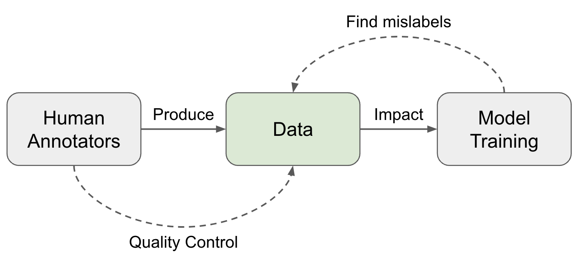
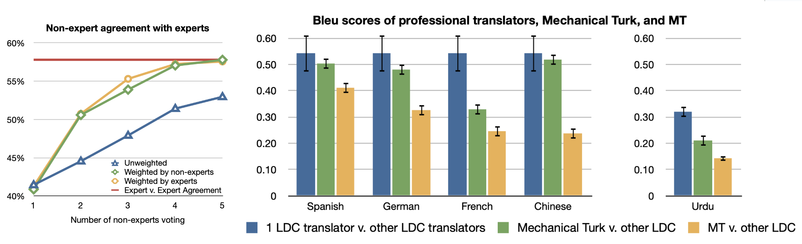
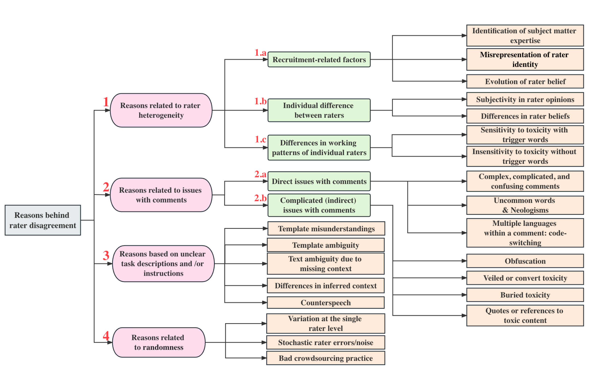
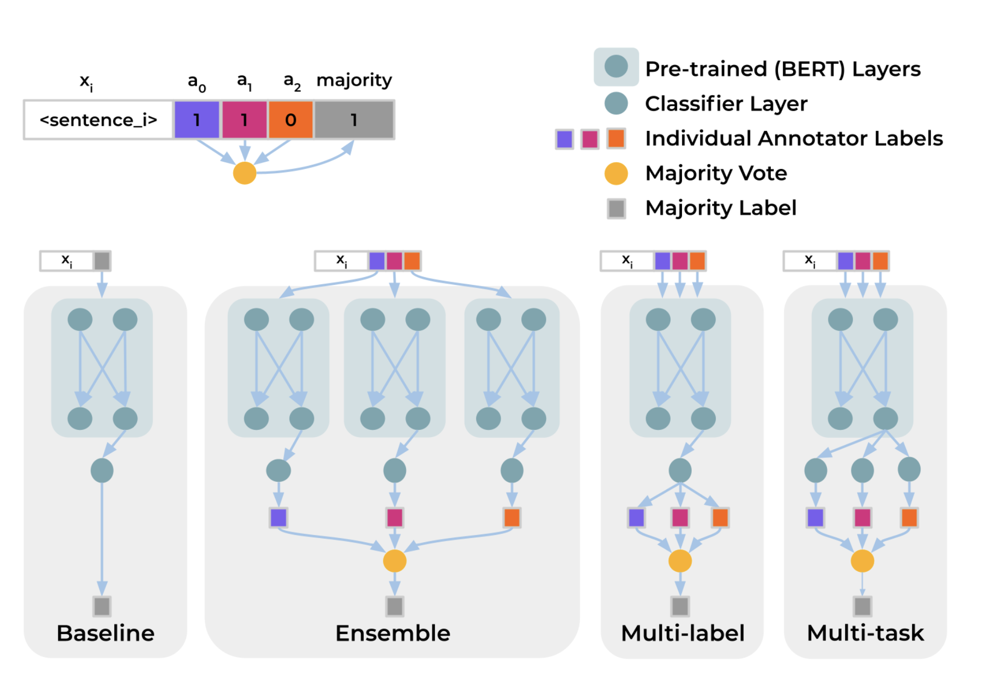
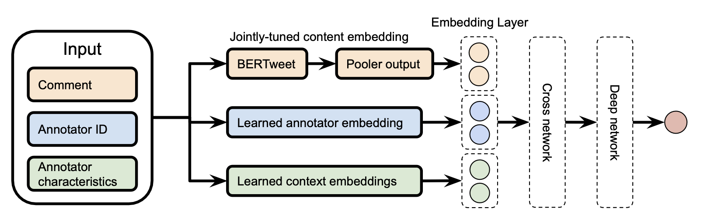
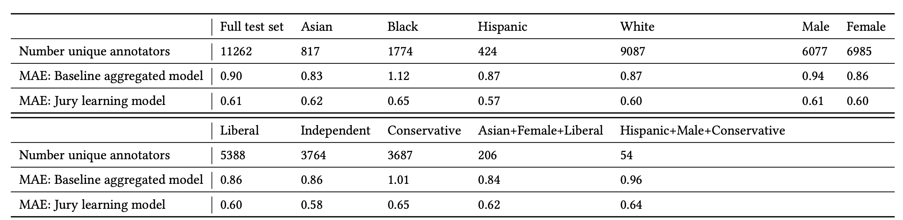
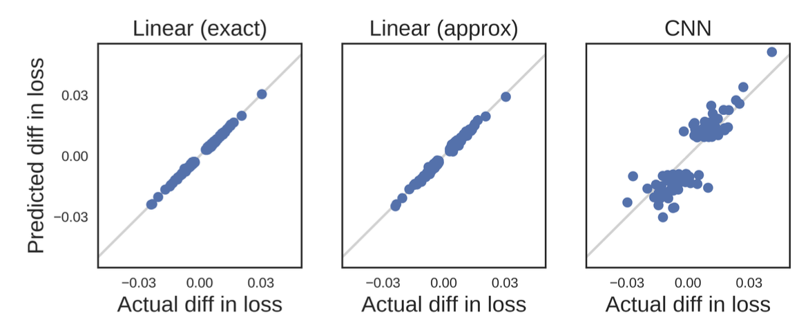
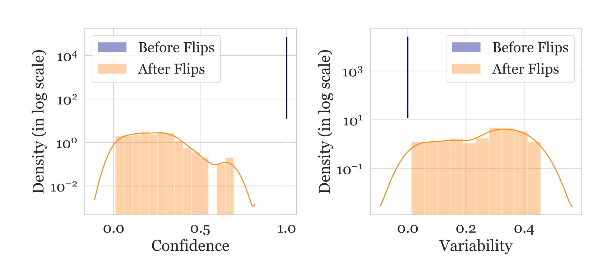
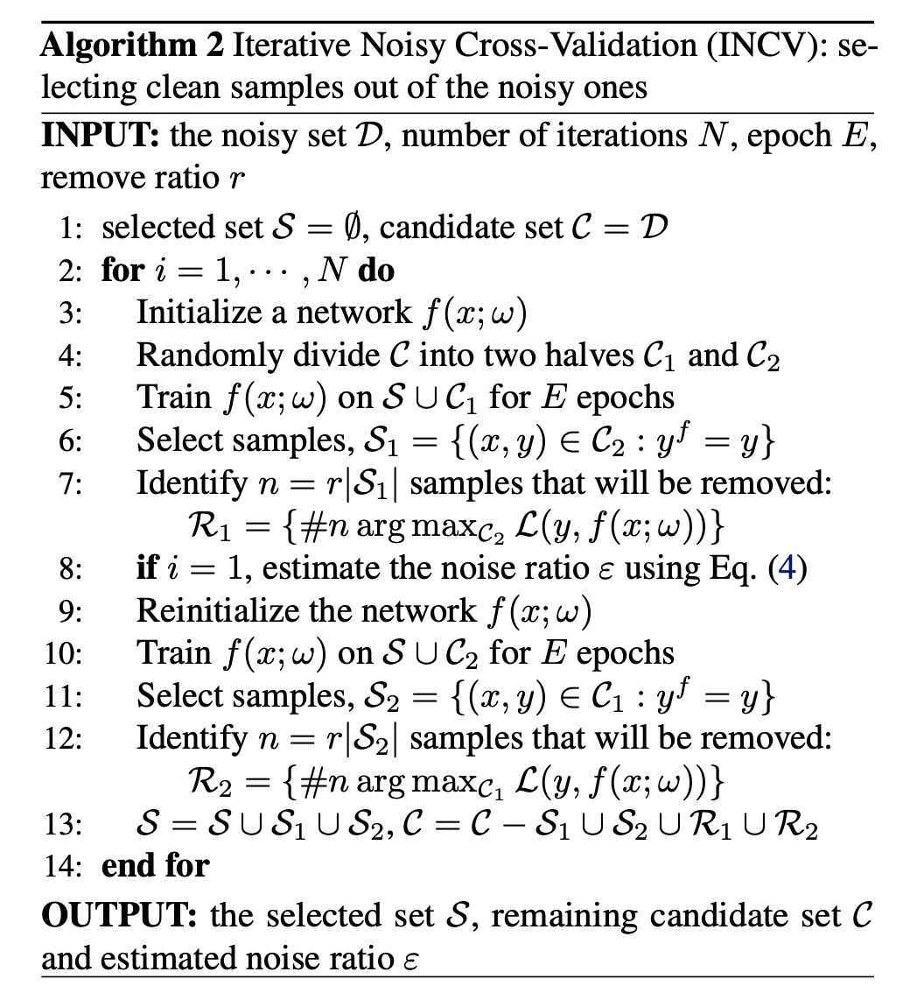

[Special thank you to Ian Kivlichan for many useful pointers (E.g. the 100+ year old Nature paper “Vox populi”) and nice feedback. 🙏 ]
High-quality data is the fuel for modern data deep learning model training. Most of the task-specific labeled data comes from human annotation, such as classification task or RLHF labeling (which can be constructed as classification format) for LLM alignment training. Lots of ML techniques in the post can help with data quality, but fundamentally human data collection involves attention to details and careful execution. The community knows the value of high quality data, but somehow we have this subtle impression that “Everyone wants to do the model work, not the data work” (Sambasivan et al. 2021).
Human Raters ↔ Data Quality
Collecting human data involve a set of operation steps and every step contributes to the data quality:
- Task design: Design task workflow to improve clarity and reduce complexity. Detailed guidelines are helpful but very long and complicated guidelines demand a decent amount of training to be useful.
- Select and train a pool of raters: Select annotators with matched skillset and consistency. Training sessions are necessary. After onboarding, regular feedback and calibration sessions are also needed.
- Collect and aggregate data. This is the stage where more ML techniques can be applied to clean, filter and smartly aggregate data to identify the true labels.
The Wisdom of the Crowd
Vox populi (originally “Vox populi, vox Dei”), a Latin phrase, means the voice of people. A short paper named was the same name was published in 1907 on Nature. It tracked an event at an annual exhibition where a fat ox was selected and people would guess the weight of the ox in order to win a prize if the guess is close to the real number. The middlemost estimate was treated as “the vox populi” and ended up being very close to the true value. The author concluded “This result is, I think, more creditable to the trustworthiness of a democratic judgment than might have been expected.” This is probably the earliest mention of how crowdsourcing (“the wisdom of the crowd”) would work out.
Almost 100 years later, Callison-Burch (2009) did an early study on using Amazon Mechanical Turk (AMT) to run non-expert human evaluation on Machine Translation (MT) tasks and even to rely on non-experts to create new gold reference translations. The setup for human evaluation was simple: Each turker is shown a source sentence, a reference translation, and 5 translations from 5 MT systems. They are asked to rank 5 translations from best to worst. Each task is completed by 5 turkers.
Unsurprisingly, there are spammers producing low quality annotation to only optimize the volume. So when measuring the agreement between experts and non-experts, different weighting schemes need to be applied to downweight the contribution of spammers: (1) “weighted by experts”: using agreement rate with experts on a gold set of 10 examples; (2) “weighted by non-experts”: relying on agreement rate with the rest of turkers on the whole dataset.
In a harder task, non-expert human annotators were asked to create new gold reference translations. Callison-Burch designed the task in two stages, where the first stage created new translations with reference to MT outputs and the second one filtered translations that may seem to be gerated by a MT system. The correlation between experts’ and crowdsourced translations is higher than that between expert and MT system outputs.
Rater Agreement
We often think of annotation as targeting a single ground truth and try to evaluate quality against one gold answer with consistent standards. A common practice for finding reliable ground truth labels is to collect multiple labels from multiple raters. Assuming that each rater performs at a different level of quality, we can use a weighted average of annotations but weighted by a proficiency score. This score is often approximated by how often one rater agrees with others.
Majority Voting: Taking the majority vote is the simplest way of aggregation, equivalent to taking the mode of a set of labels. In this setting, every annotator is contributing equally.
Raw agreement (Tratz & Hovy, 2010): Raw agreement counts the percentage of other people agreeing with them. This is indirectly correlated to majority vote, because all members of the majority class are expected to get higher inter-annotator agreement rate.
Cohen’s Kappa (Landis & Koch, 1977): Cohen’s kappa measures the inter-rater agreement in the form of $\kappa = (p_o - p_e) / (1 - p_c)$, where $p_o$ is the raw agreement rate and $p_e$ is the agreement by chance. Cohen’s kappa has a correction term for agreeing by chance, but this correction may be overestimated if one label is more prevalent.
Probabilistic Graph Modeling: There is a body of work relying on probabilistic graph modeling to model different factors within annotation decisions, e.g. difficulty of the task, task latent topics, rater bias, rater confidence, and then predict the true labels accordingly. Zheng et al. (2017) compared 17 algorithms on truth inference in crowdsourcing and most of them are probabilistic graph models.
- MACE (Multi-Annotator Competence Estimation; Hovy et al. 2013) is an early example of using graph modeling to estimate the likelihood of someone acting like a “spammer” by providing random labels. Unsurprisingly in cases when the incentive is misaligned, some annotators may behave as “spammers” to optimize the volume of tasks completed for higher pay. The goal of MACE is to identify spammers. Given a task $i$ and an annotator $j$, $T_i$ is the true label, $A_{ij}$ is the assigned label and $S_{ij}$ models the probability of annotator $j$ spamming. Then the generative process can be represented as belows. The parameter $\theta_j$ defines the trustworthiness of the annotator $j$ (probability of not spamming) and the parameter $\xi_j$ defines how an annotator behaves when they are spamming.
Then we can learn $\theta, \xi$ to maximize the observed data, in the form of the marginal data likelihood, where $A$ is the matrix of annotations, $S$ is the matrix of competence indicators and $T$ is the matrix of true labels:
Either EM (Expectation–maximization) or VB (Variational Bayes) can be applied to maximize the above marginal likelihood. During EM optimization, at M-step, a fixed value $\delta$ is added to the fractional counts before normalizing. During VB training, they applied symmetric Beta priors on $\theta_j$ and symmetric Dirichlet priors on $\xi_j$. When recovering the correct answers, we can take majority vote weighted by the annotators’ $\theta$ estimates.
Rater Disagreement & Two Paradigms
The aggregation process described above depends on an assumption that there exists one underlying gold answer and thus we can evaluate annotators’ performance accordingly. However, in many topics, especially in safety, social, or cultural areas, people can disagree and often this disagreement is valid and then it comes down to how much we want to apply a strict rule versus embracing diversity.
Aroyo & Welty (2015) discussed a set of “myths” in the practice of human annotation collection and found all of them somewhat inaccurate, key findings including:
- Often there is more than one correct interpretation for some samples. We need diverse perspectives via e.g. having multiple people to review annotation quality.
- Disagreement is not always bad. We should reduce disagreements caused by errors or poorly designed process but other disagreements can give us rich information.
- If it is caused by a task not well defined, we should enhance the instruction. However, a more detailed guideline does not resolve innate diversity among opinions.
- Experts may not always be better than lay people, but they would have a big gap in terms of considering what’s important.
- Ground truth annotations can change in time, especially those related to timely events or news.
Later, Rottger et al. (2021) formulated the difference into two contrasting paradigms for data annotation for subjective NLP tasks.
| Descriptive | Prescriptive | |
|---|---|---|
| Definition | Encourage annotator subjectivity, trying to model many beliefs. | Discourage annotator subjectivity, trying to consistently apply one belief. |
| Pros | - Can help to identify which entries are more subjective; - Embrace diversity |
- More aligned with standard NLP setup. - Easier to do QC by measuring disagreement or doing label aggregation. |
| Cons | - Metrics like rater disagreement cannot be used to measure data quality or annotator performance; - Cannot be used for training models that are optimized for outputting one preset behavior. |
- Expensive and challenging to create high-quality annotation guidelines, which can never be perfect, in practice; - Training annotators to get familiar with guideline in order to apply it properly is also challenging; - Cannot capture an interpretable diversity of beliefs or consistently encode one specific belief. |
The descriptive paradigm allows us to understand a number of important effects as well as to account for different perspectives. For example, annotator identity (e.g. African American, LGBTQ) is found to be a statistically significant factor in how they would label identify-related content as toxic (Goyal et al. 2022). Topics can be another main driver for diverse opinions. Wang et al. (2023) studied the human evaluation process of safety of an AI conversation system and compared results between labels by Trust & Safety (T&S) professionals and crowdsourcing annotators. They intentionally collected rich metadata associated with crowd annotators like demographic or behavior information. Comparing T&S expert labels and crowd annotations, they found that agreement rates vary across semantic topics and the level of severity:
- Agreement rate differs a lot across different topics; ranging from 0.96 on violence/gory to 0.25 on personal topics.
- Agreement rates are higher on “extreme” and “benign” conversations, given four label options marking “benign”, “debatable”, “moderate” to “extreme”.
Zhang et al. (2023) proposed a taxonomy of rater disagreement to analyze the root causes. Among the listed causes, disagreement due to stochastic errors or inconsistency on the individual level should be avoided. In cases when a rater gives different labels to the same task when asked multiple times, some of those are most likely caused by human errors. Based on this intuition, the disagreement deconvolution method (Gordon et al. 2021) disentangles stable opinions from errors by anchoring each individual’s opinion to their own primary label and thus encouraging intra-rater consistency.
Disagreement deconvolution relies on probabilistic graph modeling:
- Estimate how often an annotator returns non-primary labels, $p_\text{flip}$
- Per sample, get an adjusted label distribution $p^*$ of primary labels based on $p_\text{flip}$
- Sample from $p^*$ as a new test set.
- Measure performance metrics against the new test set.
Given $C$-category classification, the sampling process of the generative model is stated as follows:
Given the true $p(y\mid x)$ and $p_\text{flip}$ that can be estimated from the data, we would update the label distribution of primary labels:
A new test set sampled from $p^*(y \mid x)$ represents the primary labels with individual inconsistency noise removed. It can be used for evaluation, as a noise-free test set.
To capture systematic disagreement among annotators when learning to predict labels, Davani et al. (2021) experimented with a multi-annotator model where predicting each annotator’s labels is treated as one sub-task. Say, the classification task is defined on an annotated dataset $D=(X, A, Y)$, where $X$ is the text instances, $A$ is the set of annotators and $Y$ is the annotation matrix, $y_{ij} \in Y$ represents a binary label assigned by $a_j \in A$ to the sample $x_i \in X$. The majority vote for $x_i$ is denoted as $\bar{y}_{i,}$. The experiment is to train a classification head on top of a pre-trained BERT model and compares 4 setups:
- Baseline: Directly predict the majority vote $\bar{y}_i$, not using the full annotation matrix $Y$.
- Ensemble: Train one model per annotator separately to predict $y_{ij}$ and then the results are aggregated by majority vote.
- Multi-label: Learn to predict $\vert A \vert$ labels to represent all annotators’ labels per sample $\langle y_{i1}, \dots, y_{i\vert A \vert} \rangle$, with a shared MLP layer and then outputs are aggregated.
- Multi-task: Similar to multi-label, but each annotator’s prediction head is learned from a separated MLP layer, such that we allocate extra compute to learn the difference among annotators.
Experiment results on the GHC (Gab Hate Corpus) dataset showed that the multi-task model achieves the best F1 score and also can naturally provide prediction uncertainty estimation, correlated with annotation disagreement.
Jury Learning (Gordon et al. 2022) mimics the jury process by modeling the different annotators’ labeling behavior conditioned on their characteristics. Starting with a dataset with labels and demographic characteristics of each labeler, we train a model to learn to predict labels made by every individual annotator, each as a potential juror. At decision time, practitioners can specify the composition of a group of jurors to determine a sampling strategy. The final decision is made by aggregating labels from jurors from multiple trials.

The jury learning model is a DCN (Deep & Cross network) , commonly for recommendation use case, that is jointly trained to learn comment embedding, annotator embedding and group (annotator’s characteristics) embedding. The text content is processed by a pre-trained BERT, which is also jointly fine-tuned but for a shorter period to avoid overfitting.
Their experiment runs on the toxicity diversity dataset and compares jury learning with a baseline model which is a fine-tuned BERT to predict individual annotator’s label without using metadata. Performance is measured in MAE (mean absolute error). Jury learning consistently outperforms the annotator-agnostic baseline on the full test set as well as each group segment.
Data Quality ↔ Model Training
Once a dataset is constructed, many methods can help identify mislabels according to the training dynamics. Note that we only focus on methods to find and exclude data points with potentially incorrect labels, not about how to train a model with noisy data.
Influence Functions
Influence functions is a classic technique from robust statistics (Hampel, 1974) to measure the effect of training data points by describing how the model parameters change as we upweight a training point by an infinitesimal amount. Koh & Liang (2017) introduced the concept to be applied to deep neural networks.
Given $n$ data samples in the train set, $z_i = (x_i, y_i)$ for $i =1, \dots, n$, The model parameter $\theta$ is optimized to minimize a loss: $\hat{\theta} = \arg\min_{\theta \in \Theta} \frac{1}{n}\sum_{i=1}^n \mathcal{L}(z_i, \theta)$. The change of model parameters after we remove a single data point $z$ is denoted as $\hat{\theta}_{-z} - \hat{\theta}$ where $\hat{\theta}_{-z} = \arg\min_{\theta \in \Theta} \frac{1}{n} \sum_{z_i \neq z} \mathcal{L}(z_i, \theta)$. However, computing this literally for every sample is too expensive. One way to approximate this is to compute the parameter change given a small upweight $\epsilon$ on $z$. By definition, the influence of upweighting $z$ by $\epsilon$ is given by:
where $\hat{\theta}_{\epsilon,z} = \arg\min_{\theta \in \Theta} \frac{1}{n}\sum_{i=1}^n \mathcal{L}(z_i, \theta) + \epsilon L(z, \theta)$ and $\mathbf{H}^{-1}_{\hat{\theta}} = \frac{1}{n}\sum_{i=1}^n \nabla^2_\theta \mathcal{L}(z_i, \hat{\theta})$. Removing a data point $x$ is equivalent to upweighting it by $\epsilon = -\frac{1}{n}$ and therefore $\hat{\theta}_{-z} - \hat{\theta} \approx -\frac{1}{n} \mathcal{I}_{\text{up,params}}(z)$.
The influence of upweighting $z$ on the loss at a test point $z_\text{test}$ is given by applying the chain rule:
Using the influence function we can measure the effect of a single data point on model parameters and loss function in closed forms. It can help approximate leave-one-out retraining without actually running all the retraining. To identify mislabeled data, we can measure $\mathcal{I}_\text{up,loss}(z_i, z_i)$, approximating the prediction error on $z_i$ if $z_i$ is removed from the training set.
Given the closed form, influence functions is still hard to be scaled up because the inverse Hessian vector product is hard to compute. Grosse et al. (2023) experimented with the EK-FAC (Eigenvalue-corrected Kronecker-Factored Approximate Curvature; George et al. 2018) approximation instead.
Prediction Changes during Training
Another branch of methods are to track the changes of model prediction during training to identify cases which seem hard to be learned. Data Maps (Swayamdipta et al. 2020) tracks two attributes of model behavior dynamics during training to analyze the quality of dataset:
- Confidence: The model’s confidence in the true label, defined as the mean model probability of the true label across epochs. They also used a coarse-grained metric, “correctness”, defined as the fraction of times when the model predicts the correct label across epochs.
- Variability: The variation of the confidence, defined as the standard deviation of model probability of the true label across epochs.
Hard-to-learn (low confidence, low variability) samples are more likely to be mislabeled. They ran an experiment on WinoGrande dataset with 1% flipped label data. After retraining, flipped instances move to the lower confidence and slightly higher variability regions, indicating that the hard-to-learn regions contains mislabeled samples. Given this, we can train a classifier on equal numbers of label flipped and clean samples using only the confidence score (unsure why the paper didn’t use both confidence and variability as features). This simple noise classifier then can be used on the original dataset to identify potentially mislabeled instances.
However, we should not consider all hard-to-learn samples to be incorrect. In fact, the paper hypothesizes that ambiguous (high variability) and hard-to-learn (low confidence, low variability) samples are more informative for learning. Experiments showed that they are good for OOD generalization, giving better results on OOD eval, even in comparison to 100% training set.
To investigate whether neural networks have a tendency to forget previously learned information, Mariya Toneva et al. (2019) designed an experiment: They track the model prediction for each sample during the training process and count the transitions for each sample from being classified correctly to incorrectly or vice-versa. Then samples can be categorized accordingly,
- Forgettable (redundant) samples: If the class label changes across training epochs.
- Unforgettable samples: If the class label assignment is consistent across training epochs. Those samples are never forgotten once learned.
They found that there are a large number of unforgettable examples that are never forgotten once learnt. Examples with noisy labels or images with “uncommon” features (visually complicated to classify) are among the most forgotten examples. The experiments empirically validated that unforgettable examples can be safely removed without compromising model performance.
In the implementation, the forgetting event is only counted when a sample is included in the current training batch; that is, they compute forgetting across presentations of the same example in subsequent mini-batches. The number of forgetting events per sample is quite stable across different seeds and forgettable examples have a small tendency to be first-time learned later in the training. The forgetting events are also found to be transferable throughout the training period and between architectures.
Pleiss, et al. (2020) developed a method named AUM (Area under the Margin) to spot wrong labels based on such an assumption: Say, a BIRD image is mistakenly marked as DOG. The gradient update would encourage generalization from other BIRD images to this BIRD image, while the DOG label provides an incorrect supervised signal to encourage the update to go another way. Hence, there exists tension between generalization and (wrong) prediction in gradient update signals.
Given a classification dataset $(\mathbf{x}, y) \in \mathcal{D}_\text{train}$, let $z^{(t)}_i(\mathbf{x}) \in \mathbb{R}$ be the logit corresponding to class $i$ at epoch $t$. The margin at epoch $t$ is the difference between the assigned logit and the next largest logit:
A negative margin indicates a wrong prediction and a large positive margin suggests high confidence in a correct prediction. The hypothesis is that mislabeled samples would have a smaller margin than correct samples due to the tension of generalization via SGD triggered by other samples.
In order to determine the threshold, they insert fake data, named “threshold samples”, to determine the threshold:
- Create a subset of threshold samples $\mathcal{D}_\text{thr}$. If there are $N$ training samples for $C$ classes, we randomly sample $N/(C+1)$ samples and switch all their labels to a fake new class $C+1$.
- Merge threshold samples into the original dataset: $\mathcal{D}’ = { (\mathbf{x}, C+1): \mathbf{x} \in \mathcal{D}_\text{thr}} \cup (\mathcal{D} \setminus\mathcal{D}_\text{thr})$;
- Train the model on $\mathcal{D}’$ and measure AUM of all the data;
- Compute the threshold $\alpha$ as the 99th percentile of AUM of threshold samples;
- Identify mislabeled data using $\alpha$ a threshold: ${(\mathbf{x}, y) \in \mathcal{D} \setminus \mathcal{D}_\text{thr}: \text{AUM}_{\mathbf{x}, y} \leq \alpha}$
Noisy Cross-Validation
The NCV (Noisy Cross-Validation) method (Chen et al. 2019) divides the dataset into half at random, and then identifies data samples as “clean” if its label matches the predicted label provided by the model that is only trained on the other half of the dataset. Clean samples are expected to be more trustworthy. INCV (Iterative Noisy Cross-Validation) runs NCV iteratively where more clean samples are added into the trusted candidate set $\mathcal{C}$ and more noisy samples are removed.
Citation
Cited as:
Weng, Lilian. (Feb 2024). “Thinking about High-Quality Human Data”. Lil’Log. https://lilianweng.github.io/posts/2024-02-05-human-data-quality/.
Or
@article{weng2024humandata,
title = "Thinking about High-Quality Human Data",
author = "Weng, Lilian",
journal = "lilianweng.github.io",
year = "2024",
month = "Feb",
url = "https://lilianweng.github.io/posts/2024-02-05-human-data-quality/"
}
References
[1] Francis Galton “Vox populi” Nature 75, 450-451 (1907).
[2] Sambasivan et al. “Everyone wants to do the model work, not the data work”: Data Cascades in High-Stakes AI" CHI 2021
[3] Chris Callison-Burch. “Fast, Cheap, and Creative: Evaluating Translation Quality Using Amazon’s Mechanical Turk” EMNLP 2009
[4] Rottger et al. “Two Contrasting Data Annotation Paradigms for Subjective NLP Tasks” NAACL 2022.
[5] Aroyo & Welty “Truth Is a Lie: Crowd Truth and the Seven Myths of Human Annotation” AI Magazine 36.1: 15-24 (2015).
[6] Hovy et al. “Learning Whom to Trust with MACE” NAACL-HLT 2013.
[7] Wang et al. “All that Agrees Is Not Gold: Evaluating Ground Truth Labels and Dialogue Content for Safety” 2023.
[8] Zhang et al. “A Taxonomy of Rater Disagreements: Surveying Challenges & Opportunities from the Perspective of Annotating Online Toxicity” arXiv preprint arXiv:2311.04345 (2023).
[9] Davani et al. “Dealing with disagreements: Looking beyond the majority vote in subjective annotations” ACL 2022.
[10] Gordon et al. “Jury Learning: Integrating Dissenting Voices into Machine Learning Models” CHI 2022.
[11] Gordon et al. “The Disagreement Deconvolution: Bringing Machine Learning Performance Metrics In Line With Reality” CHI 2021
[12] Daniel et al. 2018 “Quality Control in Crowdsourcing: A Survey of Quality Attributes, Assessment Techniques, and Assurance Actions” ACM Computing Surveys (CSUR), 51(1), 1-40 (2018).
[13] Koh & Liang. “Understanding Black-box Predictions via Influence Functions” ICML 2017.
[14] Grosse et al. “Studying Large Language Model Generalization with Influence Functions” arXiv preprint arXiv:2308.03296 (2023).
[15] Swayamdipta et al. “Dataset Cartography: Mapping and Diagnosing Datasets with Training Dynamics” EMNLP 2020.
[16] Toneva, et al. “An Empirical Study of Example Forgetting during Deep Neural Network Learning” ICLR 2019.
[17] Pleiss, et al. “Identifying Mislabeled Data using the Area Under the Margin Ranking” NeuriPS 2020.
[18] Chen et al. “Understanding and utilizing deep neural networks trained with noisy labels” ICML 2019.